🎯 1. Events and Custom Events
📦 Built-in Events:
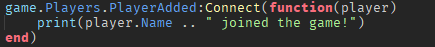🛠 Custom Events with BindableEvents:
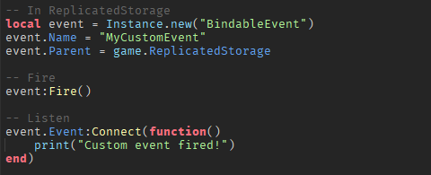🧍 2. RemoteEvents (Client ↔ Server)
Used for communication between scripts and LocalScripts.
Example: When a player clicks a GUI button:
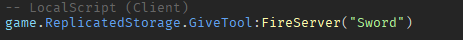 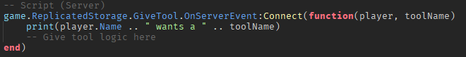🧰 3. Using ModuleScripts
Modules let you store reusable code, like functions or tools.
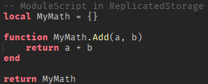 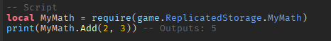🗂 4. Organizing Code with Folders and Services
Use Folders, ModuleScripts, and good structure:
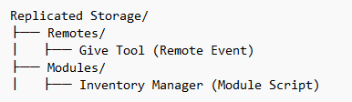Use game:GetService("ServiceName") instead of game.Workspace, etc.
🧠 5. Tables (Mini Databases)
Tables are powerful for storing data:
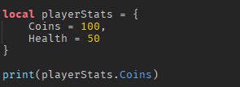You can use tables for inventories, NPC info, save data, etc.
⏱ 6. Debounce (Prevent Spamming)
Use a debounce to prevent a function from running too often:
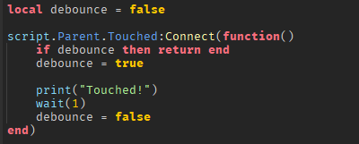📋 7. Leaderstats (Scoreboards)
Used to track coins, kills, etc.
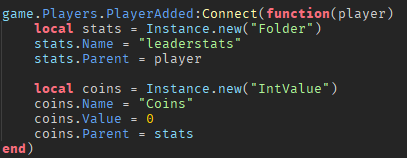🔄 8. Tweening (Smooth Animation)
Use TweenService to move or fade things smoothly:
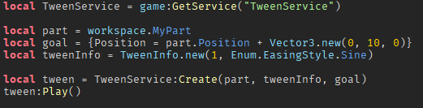🎨 9. Basic GUI Scripting
Make buttons do stuff:
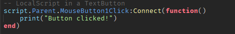🌍 10. Workspace vs ServerScriptService vs ReplicatedStorage
Workspace: Visible game world
ServerScriptService: Safe for server-side scripts (not visible to players)
ReplicatedStorage: Shared between client and server
StarterGui: GUIs shown to the player
✅ What’s Next?
Once you’re comfortable with this, you’re ready to start:
- Building custom tools
- Adding shops and inventories
- Working with datastores
- Writing your own mini systems (like quests or combat)